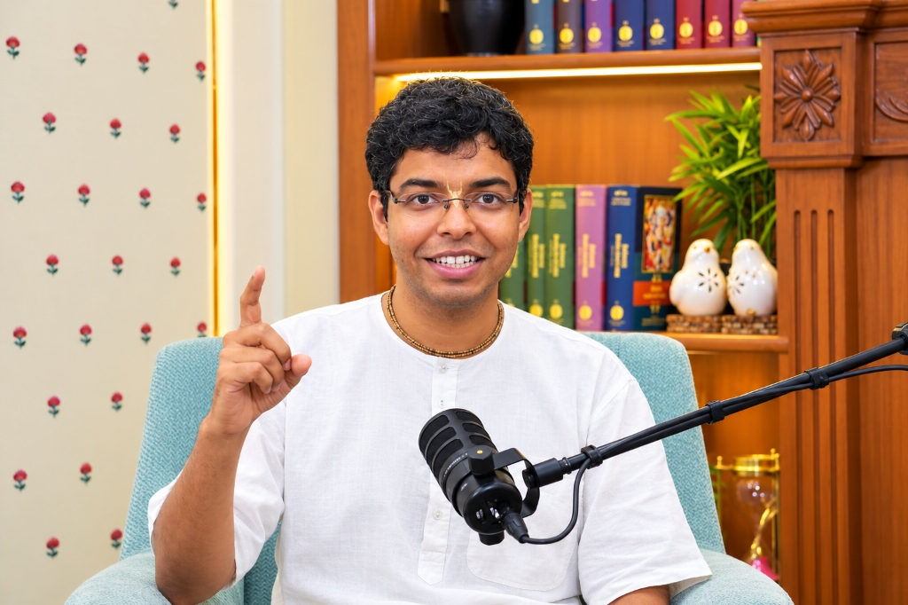

Dhananjay Vashistha is a rare blend of technical expertise and deep-rooted wisdom in the Indian Knowledge System (IKS). A Computer Science graduate from BITS Pilani, he spent several years at Cisco Systems as a Network Consulting Engineer in Bangalore, optimizing large-scale global networks. However, driven by a profound devotion to ancient wisdom, he transitioned into the sacred realm of Vedic studies, scriptural hermeneutics, and spiritual mentorship.
Currently serving as a Research Associate at one of the leading Research Centers affiliated with Mumbai University, he is deeply involved in pioneering projects connecting classical Vedic philosophy with modern leadership and contemporary thought. His areas of core expertise encompass the Bhagavad Gita, Vedic Hermeneutics, community development principles, and timeless leadership paradigms.
Beyond academia, Dhananjay is an accomplished Bhagavad Gita teacher, Certified Yoga Trainer (RYT® 500), Certified Chakra Healer, and Heritage Interpreter, bringing sacred narratives alive for seekers worldwide. As Project Head of Guhya Gyan Academy, he oversees the creation of studio-mastered audiobooks on Vedic scriptures and authors daily contemplative insights under Bhagavatam Droplets.
Multidisciplinary Mastery & Service
A unique synthesis across philosophy, theology, yoga sadhana, software engineering, financial advisory, and holistic counseling.
Philosophy & Epistemology
- ✦ AIR 24 in GATE 2023 in Philosophy
- ✦ Research Associate at BRC, Mumbai University
- ✦ Comparative analysis uniting classical Indian metaphysics with modern epistemology
Theology & Hermeneutics
- ✦ Topper — National Bhagavad Gita Championship
- ✦ Topper — National Valmiki Ramayan Championship
- ✦ Bhakti Shastri (presently pursuing Bhakti Vaibhav)
- ✦ Traditional Vedic Hermeneutist & Heritage Interpreter
Yoga, Pranayama & Healing
- ✦ Registered Yoga Trainer (RYT® 500, Yoga Alliance)
- ✦ Diploma in Yoga Education
- ✦ Certified Chakra Healer & Pranayama practitioner
- ✦ Holistic mind-body somatic alignment and breathwork
High Technology & Systems
- ✦ B.E. Computer Science, BITS Pilani
- ✦ 6+ Years at Cisco Systems as Network Consulting Engineer
- ✦ Digital architecture, knowledge platforms & Web Development
Advisory & Authorship
- ✦ Author of acclaimed financial guide Money Matters
- ✦ Financial Investments & Retirement Corpus Advisor
- ✦ Strategic tax optimization & ethical wealth stewardship
Mentorship & Counseling
- ✦ Psycho-Philosophical Counselor & Therapist
- ✦ Spiritual Mentor for youth, seekers & professionals
- ✦ Dharmic life orientation, values coaching & mental clarity
Sacred Initiatives & Direct Access
Engage directly through ongoing scriptural discourses, classical audiobooks, and bespoke 1-on-1 consultations.
Online Valmiki Ramayan Series
Immerse in daily 30-minute intensive verse-by-verse classes chanted directly from Maharishi Valmiki’s original Sanskrit verses, beginning from the sacred Kishkindha Kand.
Guhya Gyan Academy & Audiobooks
Project Head overseeing high-fidelity audiobooks of Vedic scriptures, along with daily spiritual transmissions under the banner Bhagavatam Droplets and upcoming publications.
Private Consultations & Mentorship
Schedule direct personal guidance in Psycho-Philosophical Counseling, personalized Yoga & Pranayama sadhana, or strategic dharmic financial advisory.